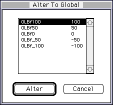
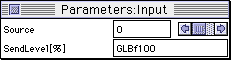

- DSP WORK RAMの先頭アドレスの設定が2000h単位になってない場合、著しく音が歪む場合が、あります（SndSimでは先頭アドレスが2000h単位でしか指定できないようになっています）。
サイズに関しては2000h単位である必要はありません。たとえばFree Area Required のサイズが10040Hの場合、（メモリの効率を考えて）そのサイズぴったりに指定して問題ありません。
- DSPリンカで使用していないOutputチャンネルのMIXERレベルは最少の0にしておいてください。
"0"以外である場合は（本来の音に対して直流成分が加算されクリップされた音になるなど）正常なエフェクトが出力されない可能性があります。
- DPSリンカでパラメータのツメをもって激しく数値を変更すると、SCSIの通信がうまくいかなくなりMACが飛びやすいのでやめてください。特にMIDI発音中はその頻度が高くなります。
- Linker,eLinkerのPEQのQはQ>=1.0を推奨とします。Gainが負の場合や、あまり大きくない正の数の場合は、1.0以下でも可です。
- DSPのEffect をかけるためにはEffect Change と MIXER Changeの両方を行う必要があります。MIXER Changeを行わないとDSP出力のレベルがあがらず、Effect 音が再生されません。
- DSPのソフトウェアモジュレーションは使わないでください。サウンドドライバが対応していません。
- 曲とSEで別エフェクトをかけたり、曲中で何種ものエフェクトを切り替えたり、などもデータの作成の仕方によって可能です。ぜひ、試してみてください。
- DSPの方が68000よりも、DRAMのバスにアクセスする優先順位が上です。そして、DSPは68000と同じDRAMをアクセスするため、（遅延RAMを何度もRead/WriteするTap処理のある）Delay系のエフェクトを使用すると、68000の処理が先送りされ、曲がもたったり、コマンドを受け付けなかったりしてしまう事態が起こります。
特にeLinker（拡張リンカ）のリバーブ、アーリーリフレクション等はその可能性が高く、使用スロットの多いFMを使用する場合なども注意が必要です。
- SCSPのDSP動作について
SCSPのDSPは128ステップの命令を常に処理しています。初期状態では、128ステップすべてNOP(No OPeration)が書き込まれますので、DSPのエフェクトは何も音を出さない状態でひたすら空回りしている訳です。DSPLinkerでエフェクトモジュールをパッチングし、ProcessメニューのLinkを実行することによって、MACINTOSH上でDSPに書き込む命令コード(.EXBの拡張子のついたファイル）が作成されます。そしてProcessメニューのDownloadにてその命令コードがDSPに書き込まれ、DSPはパッチングされたモジュールの（REVERBならREVERBの）動作をする命令を実行しはじめます。このDownloadの動作が実機におけるEffect Changeにあたります。
- Option メニューのRingBufferについて
「RingBuffer」メニューアイテムは、現在編集中のアルゴリズムで使用するリングバッファ（遅延用メモリ）のサイズを設定するために使用します。RingBufferはサウンドRAM4Mbit内にとられます。ここでの設定値が小さすぎると、リンク実行時にエラーが発生します。また、リンクが成功した場合でも使用するサウンドWORK RAMのサイズを少なくするために、リンク結果情報ダイアログの表示内容を参照して、必要最小限の設定とすることを推奨します。
- DSP EFFECT モジュールの使用ステップ数
| INPUT | 2 |
| OUTPUT | 2 |
| REVERB | 30 |
| EARLY REFLACTION | 54 |
| DELAY | 20 |
| PITCH SHIFT | 24 |
| CHORUS | 24 |
| FLANGER | 28 |
| SYMPHONIC | 24 |
| SURROUND | 38 |
| VOICE CANCEL | 38 |
| AUTO PAN | 6 |
| PHASER | 18 |
| DISTORTION | 24 |
| FILTER | 8 |
| DYNAMIC FILTER | 20 |
| PARAMETRIC EQ | 8 |
| MIXER2 | 4 |
| MIXER3 | 4 |
| MIXER4 | 6 |
| MIXER6 | 8 |
| MIXER8 | 10 |
これらの合計が128ステップを超えない範囲で自由にエフェクトをパッチングすることができます。
***参考***
AUTOPANはゲートとして使えます。あまり左右に広げたくないときは、AUTOPAN用のVOICEのピッチを変えてみるか、MIXERのパンを調整します。
- DSP EFFECT モジュール（拡張含む）のメモリアクセス回数と使用ボイス数
| REVERB | 10 |
| EARLY REFLACTION | 21 |
| DELAY | 3 |
| PITCH SHIFT | 3 +4ボイス |
| CHORUS | 3 +1ボイス |
| FLANGER | 4 +1ボイス |
| SYMPHONIC | 3 +2ボイス |
| SURROUND | 15 |
| VOICE CANCEL | 0 |
| AUTO PAN | 0 +2ボイス |
| PHASER | 3 +1ボイス |
| DISTORTION | 0 |
| FILTER | 0 |
| DYNAMIC FILTER | 5 +1ボイス |
| PARAMETRIC EQ | 0 |
| MIXER2 | 0 |
| MIXER3 | 0 |
| MIXER4 | 0 |
| MIXER6 | 0 |
| MIXER8 | 0 |
| REVERB E | 29 |
| EARLY REFLACTION E | 29 |
| DELAY E | 4 |
| PITCH SHIFT | 4 +12ボイス |
| CHORUS E | 4 +3ボイス |
| DIST E | 0 |
| Q-SOUND4 | 0 |
| Q-SOUND8 | 0 |
| YAMAHA3D-SOUND | 0 |
メモリアクセス回数が多いDSP EFFECT モジュールほど、サウンドドライバに対して負荷がかります。具体的には、曲がもたったり、同時にいくつもSEが鳴ると音が止まったりします。
具体的には、拡張リンカのリバーブ類はかなり負荷が大きくなります。
その場合の対処は、
- 曲のシーケンスデータを間引く。
- FM（特に和音）の音色があったら、やめる。
- メモリアクセス回数の少ないエフェクトに変える。
などしてください。
また、サウンドドライバのバージョン2.00から、ドライバの動作が軽くなりましたので、1.xx台より、曲がもたるケースは減るはずです。
使用ボイス数の意味は、最大発音数32音からこの数分発音数が減る、ということです。
また、複数のエフェクトを同時に使用する場合、これらの数字は加算されます。
- DSP EFFECT のQ-SOUND8モジュール使用時の対処方法
そのまま、Link, Downloadを行うとエラーメッセージがでます。そのときの対処は以下の手順で行ってください。
- ウインドウ内のInput モジュールのSend Levelを選択し、反転させる。
- Global Coef メニューからAlter To GlobalのなかのGLBf100を選択し、反転させ、Alter のボタンを押します。

- Send Levelの表示がGLBf100に変わります。

- 以上の作業を8つのInput モジュールに対して行います。
- Ｑサウンド
コントロールチェンジ＄５０（８０）でコントロールします。
Ｑサウンドのモジュールの入力チャンネル０〜７がそれぞれＭＩＤＩチャンネル１〜８と対応してコントロールされます。
従って、ＭＩＤＩを使用してＱサウンド入力チャンネル２をコントロールする場合、ＭＩＤＩチャンネル３にてコントロールチェンジを行います。
コントロールチェンジで設定するパラメータと効果の関係は次の通りです。
左 〜 中央 〜 右
０ − １５ − ３０
- ヤマハ３Ｄサウンド
コントロールチェンジ＄５１、＄５２、＄５３にて３つのパラメータを設定します。
このモジュールは１チャンネルのみですので、ＭＩＤＩチャンネルに関わらずコントロール可能です。
コントロールチェンジとパラメータ、効果の関係は次の通り。
- 距離
- コントロールチェンジ＄５１（８１）
自分の周囲 〜 遠方
＄００ − ＄７Ｆ
- 方位
- コントロールチェンジ＄５２（８２）
正面 〜 右９０°〜 後面 〜 左９０°〜 正面
＄００ − ＄２０ − ＄４０ − ＄６０ − ＄７Ｆ
- 高さ
- コントロールチェンジ＄５３（８３）
真上 〜 目の高さ〜 真下 〜後方の目の高さ〜 真上
＄００ − ＄２０ − ＄４０ − ＄６０ − ＄７Ｆ
サウンドコントロールコマンド＝11H(YAMAHA 3Dサウンド )、サウンドコントロールコマンド＝12H(Qサウンド )についての
詳細は「サウンドドライバVer.2.20プログラマーズガイド」の
サウンドコントロールコマンドおよび
Ｑサウンドおよび
YAMAHA 3D サウンドを参照してください。
- EFFECT CHANGE時のノイズについて
EFECT CHANGE時にチップの仕様上若干ノイズがでますので、SOUND INITIAL, MIXER CHANGE等のホストコマンドでEFECTリターンレベルを落としてふせぎます。
サウンドドライバのVersion1.28以前におけるEFFECT CHANGE時のノイズを最少にする手順は、下記の通りです。
音色バンクデータにEFFECT RETURNのレベルがすべて0のMIXERデータ(MIXER0)と、RETURNのレベルがあがっているデータ(MIXER1)を用意する。
- シーケンスオフ
- オールノートオフ
- ミキサーチェンジ(MIXER0) EFFECTのレベル下げる
- エフェクトチェンジ
- 50mSecほど待つ
- ミキサーチェンジ(MIXER1) EFFECTのレベルあげる
- シーケンススタート
サウンドドライバのVersion1.31以降は特にこの処理は必要ありません。ドライバが以上の管理を行います。そのため、SEQ_START時に最大64msec分、エフェクト音の立ち上がりが遅れますが、聴感上はまず問題ないでしょう。